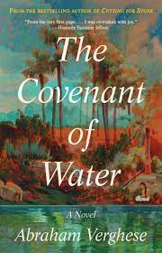
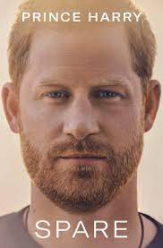

Book Gallery

It Ends with Us
4.6/5
It Ends with Us is a romance novel by Colleen Hoover, published by Atria Books on August 2, 2016. Based on
the relationship between her mother and father, Hoover described it as "the hardest book I've ever
written".As of 2019, the novel had sold over one million copies worldwide and been translated into over
twenty languages.
read more

Atomic Habits
4.5/5
No matter your goals, Atomic Habits offers a proven framework for improving—every day. James Clear, one of
the world's leading experts on habit formation, reveals practical strategies that will teach you exactly how
to form good habits, break bad ones, and master the tiny behaviors that lead to remarkable results.
read more

The Covenant of Water
4.3/5
The Covenant of Water is the long-awaited new novel by Abraham Verghese, the author of Cutting for Stone.
Published in 2009, Cutting for Stone became a literary phenomenon, selling over 1.5 million copies in the
United States alone and remaining on the New York Times bestseller list for over two years.
read more

It Starts with Us
4.4/5
It Starts with Us is a romance novel by Colleen Hoover, published by Atria Books on October 18, 2022. It is
the sequel to her 2016 best-selling novel It Ends with Us. The sequel was first announced in February 2022.
It became Simon & Schuster's most pre-ordered book of all time.
read more

Spare
4.1/5
It was one of the most searing images of the twentieth century: two young boys, two princes, walking behind
their mother’s coffin as the world watched in sorrow—and horror. As Princess Diana was laid to rest,
billions wondered what Prince William and Prince Harry must be thinking and feeling—and how their lives
would play out from that point on.
read more